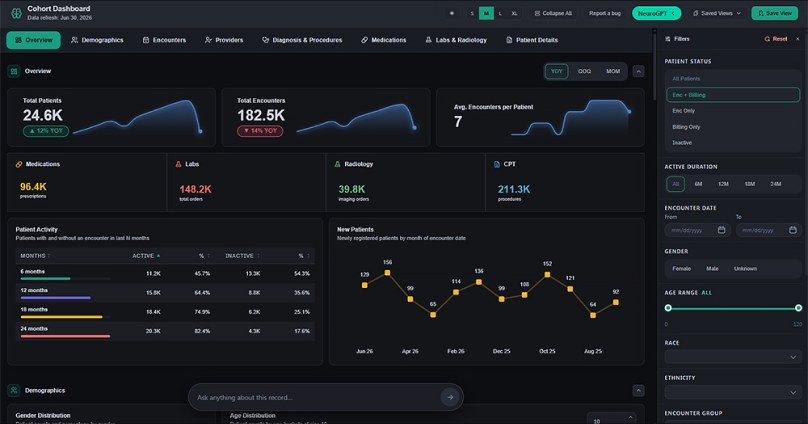

<!doctype html><html lang="en"><head><meta charset="utf-8"><meta name="viewport" content="width=device-width,initial-scale=1"><title>Provider Platform · NeuroDiscovery AI</title>
<link href="https://fonts.googleapis.com/css2?family=Instrument+Sans:wght@400;500;600;700&display=swap" rel="stylesheet"><link rel="stylesheet" href="site.css"><script>(function(){var d=document.documentElement;function f(){var w=window.innerWidth;if(w>=1100){d.classList.add("fz");d.style.zoom=w<1920?String(w/1920):""}else{d.classList.remove("fz");d.style.zoom=""}}f();addEventListener("resize",f)})()</script></head>
<body data-page="pp"><main id="page"></main><script src="site.js"></script><script>
const TABS=[
 ['Analytics &amp; Reporting','Provider Dashboard','Real-time program performance visibility','Live dashboards across clinical outcomes, operational metrics, and practice performance. Validate every decision with data.'],
 ['NeuroGPT','Conversational Analytics','Ask your patient data anything','Interrogate your patient dataset—including radiology scans—in plain language. Get instant answers without building reports or waiting on manual analysis.'],
 ['Imaging Intelligence','Neuroimaging AI','Imaging findings, surfaced instantly','AI-extracted imaging findings and biomarkers linked to every patient record, ready for clinical review and research.'],
 ['Trial Operations','Trial Matching','Convert more patients to trials','Automated patient identification and auditable workflows. Convert more patients to trials with zero manual triage.'],
 ['In-EHR Assistant','Point-of-care','Evidence-backed answers in your workflow','Patient summaries, medication options, and clinical trial matches appear directly in your workflow—no context switching.']];
render([
['hero',{img:'pp-hero.jpg',h:'Unlock the full value of your neurology patient data',p:'Scale trial enrollment and neurology revenue on one unified platform—purpose-built for neurology practitioners, powered by 6M+ patient records.'}],
['cards',{h:'Built for the modern neurology practice',p:'Four core capabilities that unlock the value of your practice data.',items:[
 ['screen','Real-time practice intelligence','Live dashboards across clinical outcomes, operational metrics, and practice performance. Make data-driven decisions across your neurology program.'],
 ['search','Ask your data anything','Interrogate your patient dataset including radiology scans in plain language. Get instant answers without building reports or waiting on manual analysis.'],
 ['loop','Accelerate trial enrollment','Automated patient identification and auditable workflows. Convert more patients to trials with zero manual triage.'],
 ['brain','Point-of-care insights','Patient summaries, medication options, and clinical trial matches appear directly in your workflow. Evidence-backed answers at point of care with no friction.']]}],
['raw',{html:`<section class="alt"><div class="wrap"><h2 class="h2 reveal" style="max-width:1000px">The only clinical AI platform built specifically for neurology</h2><p class="sub reveal">Built on NeuroLLM, a multimodal neuroimaging and clinical AI foundation.</p>
<div class="ptabs reveal" id="ptabs">${TABS.map((t,i)=>`<button class="${i?'':'on'}" data-i="${i}">${t[0]}</button>`).join('')}</div>
<div class="ppanel"><div id="ptext"></div></div></div></section>`}],
['impact',{h:'Proven outcomes for neurology providers and health systems',items:[
 ['chart','Faster clinical decisions','Evidence-backed insights at the point of care reduce time spent deciding what works. Neurologists prescribe with confidence, faster.'],
 ['doc','Better patient outcomes','Clinical decisions grounded in real-world evidence from similar patients. Measurable improvement in time-to-diagnosis, remission rates.'],
 ['dollar','Multiple Revenue Streams','Generate sustainable revenue from trial enrollment and real-world evidence partnerships—powered by your neurology data.']]}],
['stories',{items:[['story-gelblum.jpg','First Choice Neurology: Pioneering Partner in the World’s Largest Neurology Data Platform','Dr. Jeffrey Gelblum, MD, FAAN, Senior Neurology Attending &amp; Partner, First Choice Neurology'],['story-scagnelli.jpg','Raleigh Neurology Associates Partners with NeuroDiscovery AI to Transform Patient Care','Dr. John Scaglioli, Raleigh Neurology Associates, Raleigh, North Carolina']]}],
['trust',{}],
['faq',{open:1,items:[
 ['How does NDAI integrate with our EHR?','NDAI integrates natively with leading EHR systems including Epic, Cerner, and Athena through secure API connections. Our clinical intelligence tools appear directly in your EHR workflow without requiring context switching or separate logins. Implementation typically takes 4-6 weeks and includes technical setup, provider training, and go-live support.'],
 ['Is patient data secure and HIPAA-compliant?','Yes—end-to-end encryption, role-based access, SOC 2 Type II controls and regular audits.'],
 ['How does the NeuroLLM work?','NeuroLLM is a multimodal model trained on neurology records, notes and imaging to reason about neurological patients the way specialists do.'],
 ['What neurology conditions are covered?','All neurological conditions, from common to rare.'],
 ['Is patient data secure and Who owns/manages the data?','Your practice owns its data. We manage it securely under a BAA and never share it without approval.'],
 ['Can my practice participate in clinical trials through NDAI’s provider network?','Yes. Network practices receive matched trial opportunities and enrollment support.'],
 ['How is provider data de-identified?','Using HIPAA Safe Harbor and expert determination methods before any data leaves your environment.']]}],
['cta',{h:'See clinical intelligence in action',p:'Schedule a live walkthrough with your neurology team. 30 minutes to see how decisions change.'}]
]);
const showTab=i=>{const t=TABS[i];document.getElementById('ptext').innerHTML=`<div class="k"><span>0${i+1}</span>${t[0]}</div><h6>${t[1]}</h6><h3>${t[2]}</h3><p>${t[3]}</p>`;document.querySelectorAll('#ptabs button').forEach((b,j)=>b.classList.toggle('on',j==i))};
document.getElementById('ptabs').onclick=e=>{const b=e.target.closest('button');if(b)showTab(+b.dataset.i)};showTab(0);
</script></body></html>
